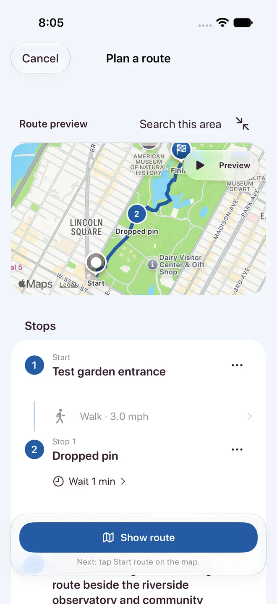

Map
Pick a place.
Search for an address or drop a pin anywhere on the map. Review your selection before starting a simulation.
Simulate your iPhone’s location. Set a pin, build a route with your own stops and speeds, and save places you want to revisit.
Sign the downloaded IPA to install it on your iPhone. Signing and pairing guide

Search for an address or drop a pin anywhere on the map. Review your selection before starting a simulation.
Add stops, set a movement mode and speed for each leg, and pause or stop whenever you need to.
Save pins, routes, and named areas. Export a backup and review what gets imported when you move to a new installation.
Install the iPhone app, complete pairing, and check your connection before starting a session.
Download the IPA and use your preferred signing setup. Back up an existing installation before replacing it.
Connect LocalDevVPN, follow the in-app pairing checklist, then check the connection.
Review a pin or route and start when you’re ready. Keep the tunnel connected while using the session controls.
No. The map on this website is an illustration. The site does not request your location, connect to your iPhone, or start a real session.
An iPhone with a compatible signed installation, LocalDevVPN, and a valid pairing. Signing permissions and iOS behavior matter; a downloaded IPA alone is not a complete setup. Follow the setup guide and the release’s requirements.
No. Session status describes Elsepin’s own connection and updates. Another app may still show an older location. Optional provider checks show a reported location and its age; they do not guarantee a fresh update. Find My Devices and Find My People are different, and People support is not a promised working feature.
Use Stop spoofing and wait for confirmation. If Elsepin can’t clear the location, connect to Wi-Fi, reconnect LocalDevVPN, and try again. Connecting to another device’s Wi-Fi hotspot can also work. Closing or force-quitting Elsepin doesn’t confirm that it cleared. Check the location in another app too.
The app has a saved library and backup import/export. Before changing your installation or signing identity, export a backup. Imports let you review individual changes; keep pairing files private and separate.
Your signing setup must retain the extension and supported capabilities. Saved-location widgets need shared App Group access. Re-signing can affect those permissions and alternate icons; the website preview cannot verify your installation.
The site code has no analytics, account forms, or location requests. Hosting providers may retain normal request logs. Read the website privacy note.